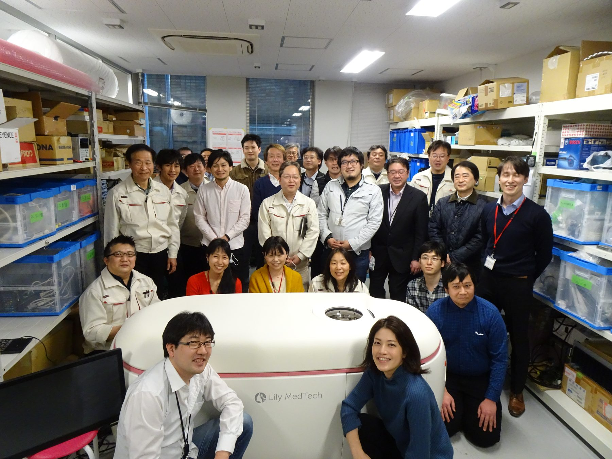
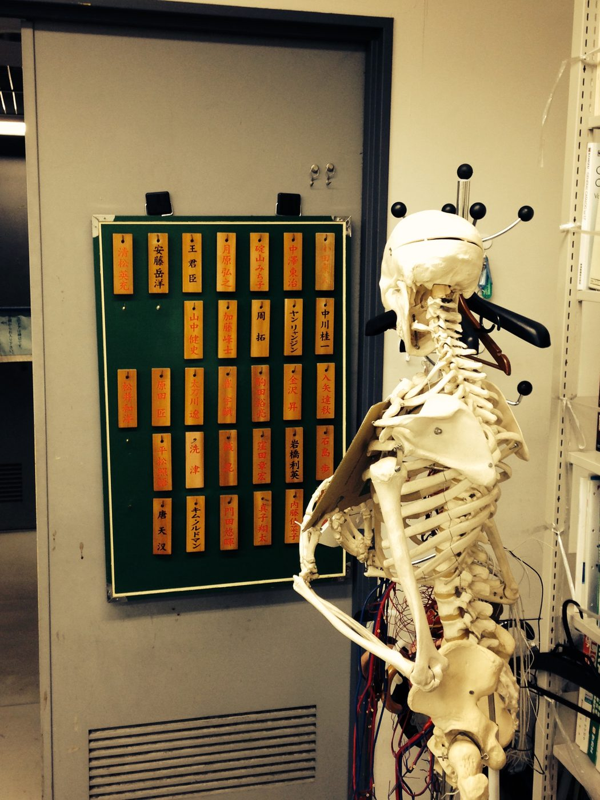
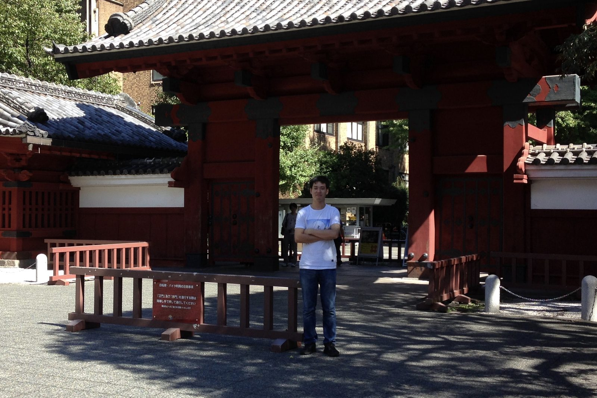

Researcher, Engineer.
Fifteen years cultivating know-how in medical devices.
Seven years building clinical USCT hardware and reconstruction algorithms at a venture-backed medtech startup.
A continuous arc through medical ultrasound — from FPGA-based front-end system, through robotic HIFU therapy, into commercial USCT system and novel imaging algorithms.



A bias toward problems where physics, signal processing and clinical constraints meet.
At Lily MedTech, contributed to the development and 2021 commercial release of COCOLY, a ring-array USCT scanner for breast imaging. Led several internal R&D projects on novel imaging methods.
PhD work proposed a dictionary-based reconstruction method that delivers high-resolution USCT echo images under reduced data acquisition — a path toward faster, cheaper scans.